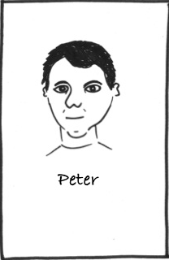
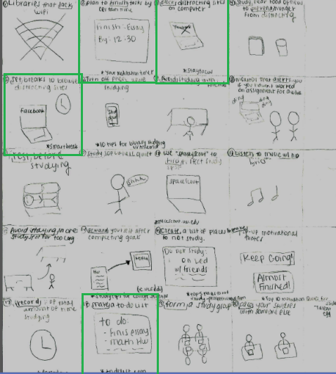
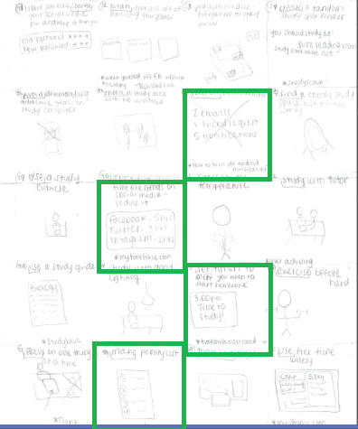

Once we identified our problem and identified our range of coverage, it was time to begin defining our design space.
We wanted to create a situation in which our design will be useful for. I used all of the information we gathered to create the following persona and scenario:
Persona:
Peter Sky is a sophomore at the University of Washington. He wants to get accepted into the political science major. He needs to receive good grades in prerequisite course to get accepted into the major. Peter Sky is the Public Relations officer of the debate club.  Peter is extremely social and likes having a lot of friends. He is also very competitive and especially enjoys playing two-player phone and computer games such as DrawSomething, Scramble or Words With Friends against other people.
Scenario
Peter Sky has a paper due on Monday and it is currently Friday. Peter sets a goal to finish the paper that day because he has a busy weekend. There is a fundraiser for Peter’s debate club on Sunday that he is helping plan. At this fundraiser, Peter will participate for the debate so he must spend some time preparing for it. As he begins his paper on this friday at 6 p.m., his mind is already distracted by his upcoming debate and ideas for the fundraiser. While working on his paper, he keeps taking breaks to research ideas that come to him. Peter also keeps receiving game requests by his friends and because he is so tempted by them, he stops working to play those games each time. Peter always has his Facebook open while he works and every so often he will check his Facebook to see what his friends are up too. Around 10 p.m, Peter is feeling so distracted that he is having a hard time focusing on his paper and barely has anything done. Although he knows he has a busy weekend, Peter decides to put his paper off until later. On Saturday, Peter spends the day preparing for his debate and on Sunday, he spends the day at his fundraiser. On Sunday evening, Peter is exhausted but he remembers he still has his paper to work on. Peter stays up late working on his paper and regrets not finishing on Friday.
Using this list and the information provided to us by our interviewees, we individually came up with 40 solutions to limit distractions for college students. The following are sketches for each of my 40 ideas:
 After comparing my ideas with my group member’s, we noticed a lot of overlap solutions that will help students focus and eliminate distractions. We then decided we will combine those ideas into the final solution: